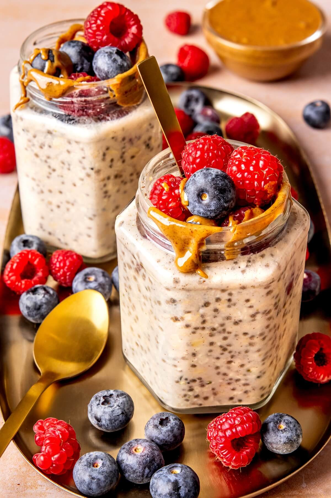

Overnight Oats Recipe

Description
Simple, easy recipe for breakfast with only four ingredients. Prep time of 10 min.
12 grams of protein per serving.
Ingredients
- Rolled oats
- Almond milk
- Chia seeds
- Honey
Steps
- Place 1/2 cup of oats in container.
- Place 1/2 cup of almond milk in container.
- Add 1 tablespoon of chia seeds.
- Mix well.
- Add honey to liking, and mix again.
- Garnish with berries, bananas, almonds, and peanut butter.
Home